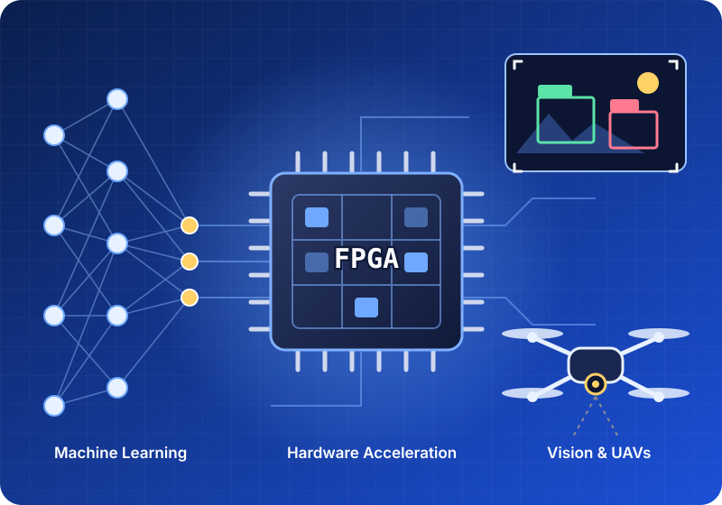

Join the group
Interested in a PhD? Find current opportunities, funding information and clear application steps.
Application guidance · Current PhD opportunities · Funding and scholarships
Our vision is a future where intelligent systems can see, learn and act everywhere, powered by efficient digital hardware designed for AI.
We co-design machine-learning and vision algorithms with energy-efficient digital systems, from FPGA acceleration and AI-driven hardware design to intelligent perception for robots and drones.
Explore our researchPublications
Interested in a PhD? Find current opportunities, funding information and clear application steps.
Application guidance · Current PhD opportunities · Funding and scholarships
Explore research software, FPGA toolflows and example implementations from the group.
Explore consultancy and collaboration with our group on intelligent digital systems.
iDSL is part of the Circuits and Systems research group in the Department of Electrical and Electronic Engineering at Imperial College London. We work on high-performance, energy-efficient digital systems, mainly for machine learning and computer vision.
Professor of Intelligent Digital Systems · Director of iDSL
I am a Professor of Intelligent Digital Systems at Imperial College London. My research focuses on the design, optimisation and implementation of digital systems tailored to the computational requirements of machine learning and computer vision algorithms. I am particularly interested in the co-optimisation of system architectures and the algorithms they execute, as well as in exploring how AI tools can be leveraged to design more efficient digital systems.
I am also Director of Undergraduate Studies in the Department of Electrical and Electronic Engineering.

Efficient and adaptive deep learning, including early-exit networks and uncertainty estimation.

Object detection and video understanding on resource-constrained hardware.
Embedded visual intelligence for drones, with partners such as the KIOS Research Center.
We welcome PhD students, postdocs and undergraduate researchers.
Work with us